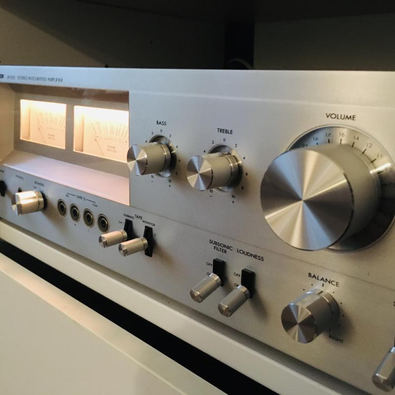
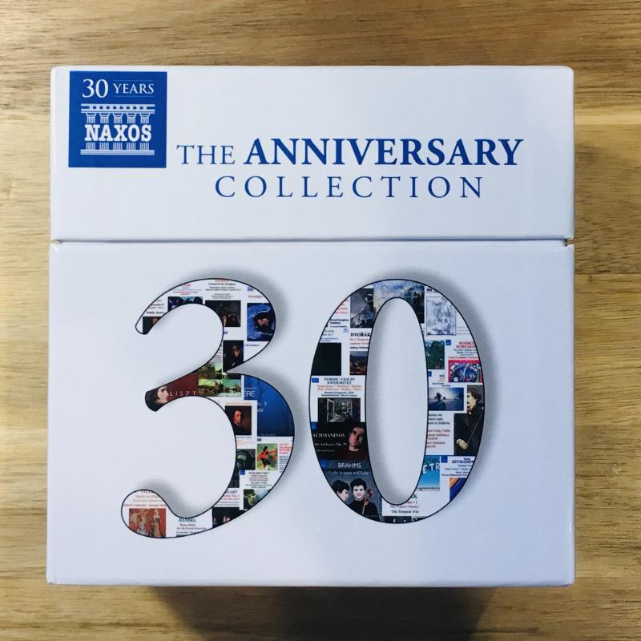
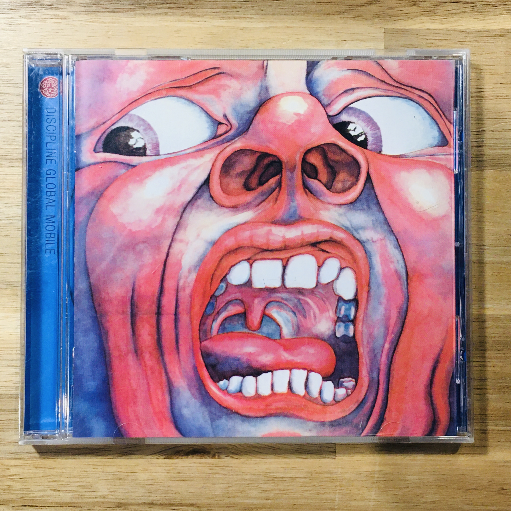

Why I went back to music CDs
Si Chelo yata ang nagsabi sa akin may 10 years na ang nakakalipas, “Digital na tayo may mga CD ka pa?” tapos binigyan niya ako ng SD card na puno ng mp3.
Hindi ko yata napakinggan ang mga mp3 na ito pero isa-isang nawala ang mga CD ko, pati yung Peel Slowly and See boxed set ng Velvet Underground, hanggang ang natira na lang ay ilang kawawang Dire Straits at Counting Crows na CD na nawala na ang mga case at booklet at nakalagay na lang sa isang CD jacket na nasa loob compartment ng kotse.
Ang karamihan ng music ay napunta na sa PC, iPod at cellphone at naging background music na lang kapag nag-i-internet o nagmamaneho ng kotse. O pinapakinggan mula sa Amazon Prime Music na napakahirap i-navigate at nawawala ang ilang album pagkatapos mong pakinggan at ilagay sa iyong “My Music” collection.
Sa pagpasok ng 2021, sa kalagitnaan ng Covid pandemic, ay naisip ko na hindi na ako nag-e-enjoy sa music hindi kagaya nang dati. Parang yung dalawang character sa short story ni Asimov na Eyes Do More Than See, sa aking palagay ay may nawala nang tuluyang naging digital ang music.
Gusto kong nahahawakan ang aking music, yung may ritwal na bubuksan mo ang case, kukunin ang CD, ipapatong sa tray, pipintudin ang PLAY. Tapos babasahin mo ang booklet.
(Nagkaroon din ako ng record player dati at talagang mas maganda ang listening experience kahit kumpara sa CD player. Nakikita mong umiikot-ikot ang plaka sa itaas ng turntable, tapos babaligtarin mo ang plaka para sa side B. Kaso ang mahal ng mga vinyl records at wala sa aking budget, bukod pa sa nagde-deteriorate habang pinapatugtog.)
Kaya nang nagkaroon ako ng extra na pera ay bumili ako ng second-hand na amplifier at CD player, at mura lang na bagong speakers. Tapos bumili ako ng mga second-hand na CD mula sa Mercari.
 Lumang Victor stereo amplifier: hindi gumagana ang Phono input.
Isa sa mga una kong binili ko ay itong boxed set ng classical music na binili ko nang mahigit lang sa 3,000 yen; and isang disc ay halos kasing mahal lang ng isang can coffee sa vending machine.

Unang pakinig lang sa Four Seasons ni Vivaldi ay sulit na sa pagbili ng mga equipment! Buong-buo ang tunog, para nasa tabi mo lang ang tumutugtog ng violin!
 In the Court of the Crimson King: Hindi dapat tataas sa 500 yen ang presyo ng second-hand na CD.
Ngayon ay paunti-unti kong binibili ang mga dating kong CD na nawala na, bukod pa sa pagdagdag ng mga classical at jazz albums, at iba pang hindi ako nagkaroon ng chance na mapakinggan.